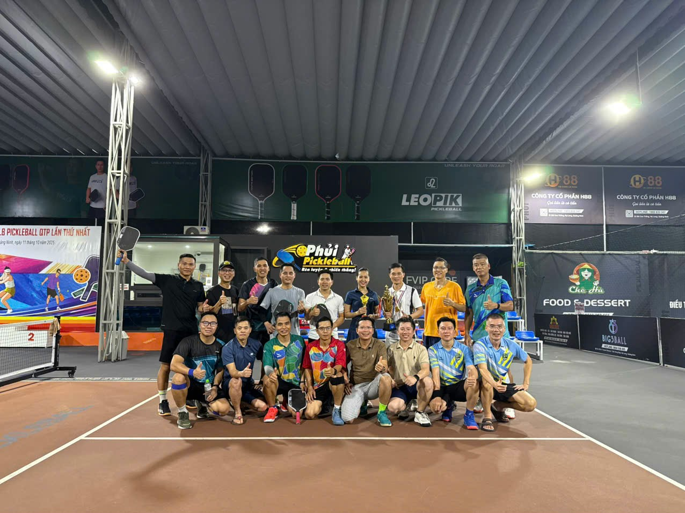
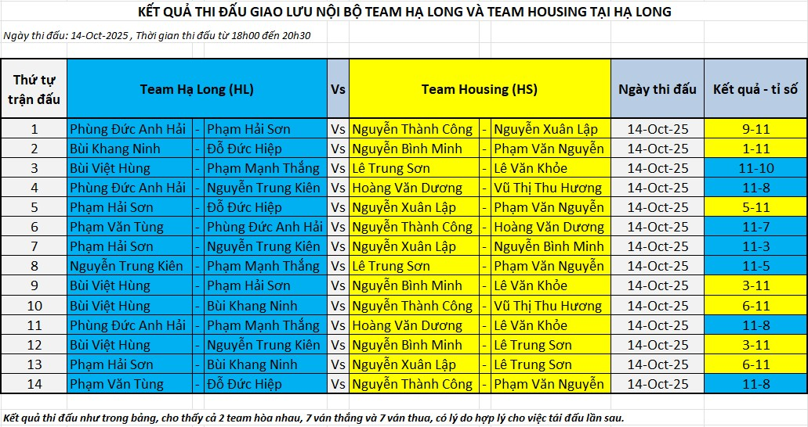
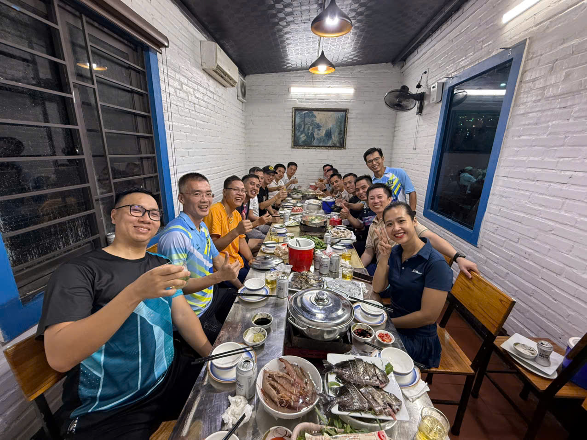
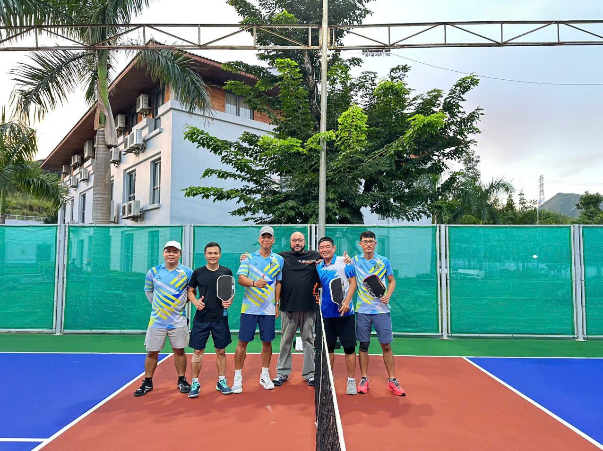

Giao Lưu Nội Bộ: Team Hạ Long vs Team Housing

Tin tức ngày 15 tháng 10 năm 2025💬 “Mỗi trận đấu không chỉ là cơ hội rèn luyện thể lực và kỹ thuật, mà còn là dịp để anh em giao lưu, chia sẻ niềm vui và đam mê chung với bộ môn pickleball. Chúng ta mong sẽ có thêm nhiều buổi thi đấu ý nghĩa như thế này trong thời gian tới.” – đại diện CLB chia sẻ.
Chiều ngày 14/10/2025, không khí tại sân pickleball Hạ Long trở nên vô cùng sôi động khi diễn ra trận giao hữu nội bộ giữa hai đội mạnh của Câu lạc bộ AES – Housing Pickleball Club: Team Hạ Long (HL) và Team Housing (HS).
Các trận đấu diễn ra trong không khí thân thiện nhưng quyết liệt, với tinh thần thể thao, fair-play và chiến thuật đỉnh cao. Tổng cộng có 14 trận đấu đôi nam và đôi nam-nữ, mang đến cho người xem những pha bóng kỹ thuật, những màn rượt đuổi tỉ số đầy gay cấn và cảm xúc.
👉 Kết quả chung cuộc: Hai đội hòa nhau với 7 trận thắng – 7 trận thua, thể hiện sự cân bằng về phong độ, kỹ thuật và chiến thuật giữa các tay vợt của hai team.

Kết quả này phản ánh đúng trình độ ngày càng cao của các vận động viên, đồng thời cho thấy sự phát triển mạnh mẽ của phong trào pickleball trong nội bộ AES – Housing.

Sau khi kết thúc những trận đấu hấp dẫn trên sân, các thành viên của hai đội tiếp tục giao lưu, chia sẻ và cùng nhau nâng ly trong không khí vui vẻ, gắn kết. Những câu chuyện sôi nổi bên bàn nhậu đã giúp các thành viên hiểu nhau hơn, tạo nên tinh thần đoàn kết, thân tình và đầy nhiệt huyết trong toàn câu lạc bộ.
💬 “Mỗi trận đấu không chỉ là cơ hội rèn luyện thể lực và kỹ thuật, mà còn là dịp để anh em giao lưu, chia sẻ niềm vui và đam mê chung với bộ môn pickleball. Chúng ta mong sẽ có thêm nhiều buổi thi đấu ý nghĩa như thế này trong thời gian tới.”– đại diện CLB chia sẻ.
🎯 Câu lạc bộ AES – Housing Pickleball Club sẽ tiếp tục tổ chức nhiều hoạt động giao lưu, huấn luyện và thi đấu nội bộ trong thời gian tới, nhằm lan tỏa tinh thần thể thao, nâng cao sức khỏe và tăng cường tình đoàn kết trong đại gia đình AES – Mông Dương.
NỘI QUY QUẢN LÝ VÀ SỬ DỤNG BÓNG PICKLEBALL CLB PICKLEBALL AES MÔNG DƯƠNG
Tin tức ngày 08 tháng 10 năm 2025
Nhằm đảm bảo việc sử dụng bóng pickleball được thuận lợi, công bằng và có tổ chức, Ban điều hành CLB xin thông báo một số quy định chung như sau:
• Bóng sẽ được giao cho bảo vệ tại khu vực cổng phụ để quản lý và cấp phát.
• Khi nhận bóng để chơi, thành viên vui lòng ghi thông tin người nhận; khi trả bóng, ghi tên người trả kèm chữ ký xác nhận.
• Mỗi sân sẽ được phát 02 quả bóng khi bắt đầu chơi
• Sân 1: gần nhà đa năng, Sân 2: gần chòi bảo vệ cổng phụ
• Nếu bóng bị hỏng trong lúc chơi, thành viên có thể mang ra đổi bóng mới.
• Bảo vệ sẽ giúp ghi chép việc đổi bóng và thu giữ bóng hỏng.
• Các bóng hỏng sẽ được lưu giữ. Vào chiều thứ Tư hằng tuần, Ban điều hành CLB sẽ kiểm tra và xác nhận số lượng, trước khi tiêu hủy theo đúng quy trình quản lý rác thải nhựa.
• Người chơi cuối cùng của sân cần trả bóng lại cho bảo vệ, tuyệt đối không để bóng trên sân sau khi kết thúc trận.
• Thành viên CLB không tự ý mang bóng (mới hoặc hỏng) về sử dụng riêng.
• Nội quy này nhằm mục đích để mọi người luôn yên tâm có bóng để chơi, kể cả vào cuối tuần, mà không cần phải giữ bóng riêng.
• Thành viên CLB không tự ý mang bóng (mới hoặc hỏng) về sử dụng riêng.
• Tất cả thành viên CLB đều có quyền và nghĩa vụ thực hiện nội quy này để duy trì sân chơi chung văn minh và bền vững.
Chủ tich CLB đã ký, Nguyễn Thành Công
Pickleball – Niềm vui giản dị và hành trình hoàn thiện bản thân

Tin tức ngày 22 tháng 9 năm 2025 Tôi không chơi Pickleball để thi đấu chuyên nghiệp hay khoe thành tích. Tôi đến với môn thể thao này đơn giản vì nó mang lại niềm vui và giúp tôi hoàn thiện chính mình. Nếu cách đây vài năm ai đó hỏi tôi về Pickleball, có lẽ tôi sẽ lắc đầu vì chưa từng nghe đến. Thế nhưng, sau gần 6 tháng gắn bó, tôi có thể khẳng định rằng môn thể thao tưởng chừng mới mẻ này đã mang lại cho tôi nhiều thay đổi tích cực – từ sức khỏe thể chất đến tác phong sống nhanh nhẹn, chủ động và kỷ luật hơn. Một trong những thay đổi rõ rệt nhất là sự bền bỉ. Mỗi buổi tập thường kéo dài vài tiếng, đòi hỏi vận động liên tục. Lúc đầu, tôi dễ xuống sức, nhưng nhờ kiên trì, tôi đã rèn được sức chịu đựng và khả năng tập trung lâu dài. Ngay cả trong những buổi họp hay dự án căng thẳng, tôi vẫn thấy mình tỉnh táo, ít rơi vào trạng thái mệt mỏi hay mất kiên nhẫn như trước. Pickleball cũng dạy tôi hiểu rằng tốc độ và sự nhanh nhẹn không chỉ đến từ thể chất mà còn từ tư duy. Muốn nhanh, trước hết phải biết chuẩn bị, quan sát và dự đoán. Bài học này tôi đem áp dụng vào công việc: chuẩn bị kỹ lưỡng, nhìn toàn cảnh, từ đó phản ứng nhanh và chính xác hơn. Không chỉ vậy, Pickleball còn rèn luyện tinh thần đồng đội. Tôi học cách lắng nghe, phối hợp nhịp nhàng, tránh “giẫm chân” đồng đội và biết hỗ trợ nhau khi gặp khó khăn. Đây là kỹ năng vô cùng cần thiết trong môi trường làm việc hiện đại, nơi sự kết nối quyết định hiệu quả của cả tập thể. Bạn bè, đồng nghiệp nhận xét tôi “nhanh nhẹn hẳn lên, giảm cân trông thấy”. Ban đầu tôi không để ý, nhưng ngẫm lại thì đúng: từ việc chuẩn bị hành lý trước mỗi chuyến đi đến xử lý tình huống bất ngờ, tôi đều gọn gàng và ít rườm rà hơn trước kia. Có người cho rằng Pickleball chỉ là môn thể thao mới du nhập, chưa phổ biến như bóng đá, tennis hay cầu lông. Nhưng với tôi, nó đã trở thành một phần trong lối sống. Ở tuổi U50, khi công việc và áp lực cuộc sống luôn đòi hỏi sự linh hoạt, tôi thấy mình thật may mắn khi tìm đến Pickleball. Tôi tin rằng, nếu nhiều người trẻ thử sức, họ cũng sẽ nhận được những giá trị tương tự: một cơ thể khỏe mạnh, một tinh thần minh mẫn và một tác phong kỷ luật, chủ động hơn. Sau 6 tháng, tôi nhận được nhiều hơn mong đợi: sức khỏe, niềm vui, sự gắn kết với bạn bè, đồng nghiệp và quan trọng nhất là một lối sống nhanh nhẹn, gọn gàng trong cả thể thao lẫn đời thường. Trong một thế giới thay đổi từng ngày, sự nhanh nhẹn không còn là lựa chọn, mà là kỹ năng sống còn. Và đôi khi, chỉ cần một quả bóng nhựa cùng chiếc vợt nhỏ bé cũng đủ để rèn luyện điều đó – từng ngày, từng trận đấu. Câu chuyện Cá nhân - chia sẻ bởi Dương Thúc Sơn
Những thói quen trên sân đã dần thấm vào cuộc sống thường ngày: dứt khoát trong xử lý công việc, linh hoạt khi gặp tình huống bất ngờ và chủ động hơn trong giao tiếp.
📖 TỔNG KẾT GIẢI ĐẤU THÁNG 9 NĂM 2025
Tin tức ngày 18 tháng 9 năm 2025
Xem chi tiết tại đây
BTC Giải Pickleball CLB AES Mông Dương xin gửi lời cảm ơn chân thành tới toàn thể thành viên đã thi đấu hết mình, mang đến những trận cầu hấp dẫn. Cảm ơn các cổ động viên đã cổ vũ sôi nổi, tiếp thêm động lực cho các VĐV.
Đặc biệt, xin tri ân các nhà tài trợ: Chị Hồng (HR), anh Lập, anh Hùng, anh Ninh, chị Minh (CSR), anh Công, anh Dương… đã đồng hành và hỗ trợ hết mình để giải đấu thành công rực rỡ.
Sự đóng góp của tất cả đã tạo nên dấu ấn đẹp, lan tỏa tinh thần Pickleball gắn kết trong Tháng hành động Wellbeing AES Mông Dương. Đây là bước khởi đầu vững chắc cho hoạt động thường niên của CLB Pickleball trong tương lai.
Ban Tổ chức trân trọng cảm ơn sự tham gia nhiệt tình và tinh thần thể thao cao đẹp của các VĐV.
BẢNG CHẤM TRÌNH ĐỘ CÁC VĐV GIẢI NỘI BỘ THÁNG 9 NĂM 2025
Xem chi tiết tại đây
>
🏓 Giải thích các tiêu chí trong Pickleball
A. Giao bóng & trả giao bóng
Serve (Giao bóng): Cú đánh mở đầu, phát từ cuối sân.
Return of Serve (Trả giao bóng): Đánh trả cú phát bóng của đối thủ.
👉 Chấm điểm:
1–3: Thường xuyên lỗi phát bóng (out, chạm lưới).
4–6: Phát/trả ổn định nhưng chưa hiểm, dễ bị phản công.
7–8: Phát/trả sâu, có độ khó, ổn định.
9–10: Phát/trả có chiến thuật, chủ động chiếm ưu thế ngay từ đầu.
B. Cú đánh cơ bản
Groundstroke – Forehand: Cú đánh thuận tay từ cuối sân.
Groundstroke – Backhand: Cú đánh trái tay từ cuối sân.
Volley – Forehand: Cú vô lê thuận tay (đỡ bóng khi bóng chưa chạm đất).
Volley – Backhand: Cú vô lê trái tay.
Overhead Smash: Cú đập bóng mạnh từ trên cao.
Lob: Cú đánh bổng, đưa bóng qua đầu đối thủ.
👉 Chấm điểm:
1–3: Đánh bóng hỏng nhiều, dễ bị đối thủ phản công.
4–6: Thực hiện được nhưng thiếu lực/độ chính xác.
7–8: Có độ chính xác và lực tốt, dùng hiệu quả trong trận.
9–10: Xuất sắc, biến hóa, kiểm soát và tấn công hiệu quả.
C. Dink & kiểm soát bóng
Dink – Forehand / Backhand: Cú đánh ngắn sát lưới, buộc đối thủ nâng bóng lên.
Third Shot Drop: Cú đánh “thả bóng” ở lần chạm thứ 3, rất quan trọng để tiến lên NVZ (vùng không vô lê).
Drop Shot: Cú thả bóng thường (ở giữa rally).
👉 Chấm điểm:
1–3: Thường xuyên đánh quá mạnh/ra ngoài.
4–6: Thực hiện được nhưng dễ bị bắt bài.
7–8: Kiểm soát tốt, bóng thấp, gây khó cho đối thủ.
9–10: Rất chính xác, chiến thuật rõ ràng, có thể chuyển thế trận.
D. Kỹ năng nâng cao
Erne: Cú đánh từ ngoài biên dọc, sát lưới (tấn công bất ngờ).
ATP (Around The Post): Cú đánh vòng qua cột lưới.
Drive Shot: Cú đánh mạnh, phẳng, tấn công từ cuối sân.
Block: Đỡ bóng nhanh, thường dùng khi đối thủ smash hoặc drive mạnh.
👉 Chấm điểm:
1–3: Ít khi thực hiện được.
4–6: Có thực hiện nhưng thành công thấp.
7–8: Thực hiện thành công nhiều lần, gây khó cho đối thủ.
9–10: Xuất sắc, dùng như vũ khí tấn công/đỡ đòn chiến thuật.
E. Chiến thuật & thể lực
Court Positioning: Khả năng chọn vị trí trên sân, di chuyển hợp lý.
Reflex / Reaction: Phản xạ tay và mắt khi bóng đến nhanh.
Consistency: Độ ổn định (hạn chế lỗi unforced errors).
Teamwork / Communication: Khi đánh đôi – phối hợp, gọi bóng, hỗ trợ đồng đội.
Fitness & Agility: Thể lực, sức bền, tốc độ di chuyển.
👉 Chấm điểm:
1–3: Hay đứng sai vị trí, nhanh mệt, nhiều lỗi không cần thiết.
4–6: Ở mức trung bình, chơi được nhưng chưa ổn định.
7–8: Rất tốt, ít mắc lỗi, giữ được nhịp đấu.
9–10: Xuất sắc, thông minh, nhanh nhẹn, thể lực bền bỉ, phối hợp mượt mà.
GIAO LƯU CHÀO MỪNG KHÁNH THÀNH SÂN PICKLEBALL XÃ HẢI HÒA, CẨM PHẢ, QUẢNG NINH

Tin tức ngày 18 tháng 8 năm 2025
📖 GIAO LƯU CHÀO MỪNG KHÁNH THÀNH SÂN PICKLEBALL XÃ HẢI HÒA, CẨM PHẢ, QUẢNG NINH
Xã Hải Hòa khánh thành sân Pickleball, điểm nhấn trong phong trào thể thao
Thiết thực chào mừng thành công Đại hội đại biểu Đảng bộ xã Hải Hòa lần thứ I, nhiệm kỳ 2025–2030 và hướng tới kỷ niệm 80 năm Cách mạng Tháng Tám, Quốc khánh 2/9, ngày 15/8/2025 xã Hải Hòa long trọng tổ chức Khánh thành và Giao lưu thể thao Pickleball.
Quy chế hoạt động câu lạc bộ
Tin tức ngày 10 tháng 7 năm 2025
📄 Xem Quy chế hoạt động CLB Pickleball AES Mông Dương dưới dạng pdf
I. MỤC ĐÍCH HOẠT ĐỘNG
• Thúc đẩy tinh thần luyện tập thể thao, nâng cao sức khỏe thể chất và tinh thần cho cán bộ,
nhân viên.
• Góp phần xây dựng môi trường làm việc tích cực, tăng cường sự gắn kết và tinh thần đồng
đội trong nội bộ công ty.
• Hỗ trợ và phát triển phong trào thể dục thể thao nói chung và Pickleball nói riêng tại AES
Mông Dương thông qua các hoạt động tập luyện, thi đấu và giao lưu.
• Tạo sân chơi lành mạnh, kết hợp hài hòa giữa sự hỗ trợ của Công ty, Công đoàn và sự đóng
góp tự nguyện của các thành viên.
II. ĐỐI TƯỢNG THAM GIA
• Tất cả cán bộ, nhân viên đang làm việc tại AES Mông Dương có nhu cầu đều có thể tự
nguyện đăng ký tham gia Câu lạc bộ.
• Thành viên cam kết tham gia tích cực, tuân thủ các quy định chung và cùng nhau xây dựng
CLB ngày càng phát triển.
TỔNG KẾT GIẢI ĐẤU CHÀO MỪNG RA MẮT CÂU LẠC BỘ PICKLEBALL AES MÔNG DƯƠNG
Tin tức ngày 04 tháng 7 năm 2025
📖 TỔNG KẾT GIẢI ĐẤU THÁNG 6 NĂM 2025
>
Ban Tổ chức trân trọng cảm ơn sự tham gia nhiệt tình và tinh thần thể thao cao đẹp của tất cả các VĐV và các cổ động viên. Sự thành công của giải đấu lần này là bước khởi đầu vững chắc cho hoạt động thường niên của CLB Pickleball AES Mông Dương trong tương lai.
Chương trình thi đấu nội bộ - tháng 6 năm 2025
Điều lệ giải - Danh Sách thành viên thi đấu
📄 Xem điều lệ giải dưới dạng word
Nhằm khuyến khích lối sống lành mạnh, nâng cao thể chất, giảm căng
thẳng và tăng cường gắn kết giữa các nhân viên,
nhân dịp thành lập Câu lạc bộ Pickleball AES Mông Dương (CLB), Ban
điều hành CLB phối hợp với bộ phận Facility tổ chức
Giải đấu nội bộ CLB Pickleball AES Mông Dương. Đây là hoạt động
thiết thực nhằm thúc đẩy tinh thần luyện tập thể thao,
nâng cao sức khỏe thể chất và tinh thần cho cán bộ, nhân viên. Tạo
sân chơi lành mạnh, giúp tăng cường sự gắn bó,
phối hợp và hỗ trợ lẫn nhau trong nội bộ Công ty.
Chiều ngày 17-Jun-2025 - BTC sẽ cho bốc thăm để ghép cặp
Các lưu ý:
- 26 đôi sẽ bốc thăm chia các đội thành 8 bảng trong đó có 6 bảng 3 đôi và 2 bảng 4 đôi
- Sẽ thi đấu vòng tròn lấy Nhất – Nhì mỗi bảng vào thi đấu vòng 1/16, tứ kết, bán kết và chung kết.
- Hai đôi thua ở trận bán kết sẽ nhận đồng giải Ba.
Các cặp vòng bảng sẽ thi đấu vào các ngày 25,26 và 30 tháng 6 năm 2025
Lưu ý:
- Các cặp đôi có thể ghép và tập luyện vs nhau để chuẩn bị thi đấu tốt, đạt thành tích cao
- BTC có chuẩn bị dầu gội và sữa tắm cho các cặp có nhu cầu tắm sớm
- Do thời lượng thi đấu trong 2 ngày khá ít, BTC các đôi cùng bảng có thể sắp xếp thi đấu từ chiều ngày thứ 4 (24/6)
- Các đôi muốn thi đấu sớm, đăng ký lịch với BTC để được sắp xếp
Cập nhật thi đấu vòng bảng ngày 25-6-2025
| Stt | Mã trận | Sân | Giờ đấu | Trận thi đấu vòng bảng | Kết quả |
|---|---|---|---|---|---|
| 1 | A1 | S1 | 17:15 | Châm/Doanh - Kiên/Lợi | 13-15 |
| 2 | B1 | S2 | 17:15 | Khỏe/Công - Minh/Hoàng | 14-15 |
| 3 | B2 | S1 | 17:30 | Sơn/Tài - Cảnh/Hùng | 9-15 |
| 4 | A4 | S2 | 17:30 | Kiên/Lợi - Nguyyễn/Ngọc | 15-13 |
| 5 | B3 | S1 | 17:45 | Khỏe/Công - Cảnh/Hùng | 15-8 |
| 6 | B4 | S2 | 17:45 | Sơn/Tài - Minh/Hoàng | 14-15 |
| 7 | B5 | S1 | 18:00 | Khỏe/Công - Sơn/Tài | 15-2 |
| 8 | A6 | S2 | 18:00 | Châm/Doanh - Nguyễn/Ngọc | 6-15 |
| 9 | B6 | S1 | 18:15 | Minh/Hoàng - Cảnh/Hùng | 12-15 |
| 10 | D1 | S2 | 18:15 | Vinh/Tùng - Lộc/Sơn | 15-5 |
| 11 | G3 | S1 | 18:30 | Ngần/Phong - Chung/Hải | 6-15 |
| 12 | F1 | S2 | 18:30 | Ninh/Lập - Mạnh/Vỹ | 15-1 |
| 13 | G2 | S1 | 18:45 | Dương/Sơn - Chung/Hải | 15-6 |
| 14 | E1 | S2 | 18:45 | Hiếu/Ngọc - Bắc/Thắng | 15-3 |
| 15 | F3 | S1 | 19:00 | Mạnh/Vỹ - Hùng/Hiển | 12-15 |
| 16 | G1 | S2 | 19:00 | Dương/Sơn - Ngần/Phong | 15-7 |
| 17 | F2 | S1 | 19:15 | Ninh/Lập - Hùng/Hiển | 15-10 |
Xác định đội nhất nhì bảng trong sau khi thi đấu
Tổng kết nhất-nhì bảng:
- Nhất B: Khỏe/Công , Nhì B: Cảnh/Hùng
- Nhất G: Dương/Sơn , Nhì G: Chung/Hải
- Nhất F: Ninh/Lập , Nhì F: Hùng/Hiển
- Các đội khác chưa xác định được, vì chưa thi đấu hết các trận trong bảng, các trận đấu đã diễn ra có chất lượng cao và không có tranh chấp, khiếu nại. Kết quả thi đấu được xác nhận và công bố rõ ràng cho các bên tham gia được biết.
Lịch thi đấu vòng bảng ngày 26-6-2025
| Stt | Mã trận | Sân | Giờ đấu | Trận thi đấu vòng bảng | Kết quả |
|---|---|---|---|---|---|
| 1 | A2 | S1 | 17:15 | Nam/Thê - Nguyễn/Ngọc | 15-6 |
| 2 | D3 | S2 | 17:15 | Lộc/ Sơn - Hiếu/Dương | 15-12 |
| 3 | E2 | S1 | 17:30 | Hiếu/Ngọc - Tuấn/Hiệp | 15-13 |
| 4 | H1 | S2 | 17:30 | Công/Cương - Kiên/Hoàn | 11-15 |
| 5 | E3 | S1 | 17:45 | Bắc/Thắng - Tuấn/Hiệp | 7-15 |
| 6 | D2 | S2 | 17:45 | Vinh/Tùng - Hiếu/Dương | 9-15 |
| 7 | H3 | S1 | 18:00 | Kiên/Hoàn - Dũng/Sơn | 15-6 |
| 8 | C1 | S2 | 18:00 | Tùng/Hương - Hiên/Lai | 15-6 |
| 9 | H2 | S1 | 18:45 | Công/Cương - Dũng/Sơn | 15-7 |
Xác định đội nhất nhì bảng trong sau khi thi đấu
Tổng kết nhất-nhì bảng:
- Nhất D: Vinh/Tùng , Nhì B: Hiếu/Dương
- Nhất H: Kiên/Hoàn , Nhì F: Công/Cương
- Nhất E: Hiếu/Ngọc , Nhì E: Tuấn/Hiệp
- Các đội khác chưa xác định được, vì chưa thi đấu hết các trận trong bảng, các trận đấu đã diễn ra có chất lượng cao và không có tranh chấp, khiếu nại. Kết quả thi đấu được xác nhận và công bố rõ ràng cho các bên tham gia được biết.
HÌNH ẢNH VINH DANH CÁC ĐỘI ĐOẠT GIẢI NHẤT, NHÌ, BA CỦA GIẢI ĐẤU THÁNG 6 NĂM 2025

| 🏅 Hạng | Tên Đội |
|---|---|
| 🥇 Giải Nhất | Phạm Văn Tùng & Vũ Thị Thu Hương |
| 🥈 Giải Nhì | Đặng Minh Hiếu & Vũ Thị Ngọc |
| 🥉 Giải Ba | Hoàng Văn Dương & Dương Thúc Sơn |
| 🥉 Giải Ba | Bùi Khang Ninh & Nguyễn Xuân Lập |
Thông báo: Công bố thành lập quỹ câu lạc bộ
Các lưu ý:
- Để có nguồn quỹ duy trì các hoạt động thường xuyên của CLB, Ban điều hành đã thống nhất và đưa ra Nghị quyết về xây dựng và sử dụng quỹ hoạt động của CLB
-
📄 NGHỊ QUYẾT
Về việc xây dựng và sử dụng Quỹ hoạt động của Câu lạc bộ
Mã QR code quỹ Vui chơi:

Mã QR code quỹ hội viên câu lạc bộ:

Giải Pickleball AES Mông Dương mở rộng năm 2025
.jpg) Tin tức ngày 10 tháng 1 năm 2025
Tin tức ngày 10 tháng 1 năm 2025
Giải Pickleball AES Mông Dương mở rộng năm 2025 – một giải đấu thể thao hấp dẫn đã được tổ chức tại AES Mông Dương.
Tại Việt Nam, bộ môn Pickleball ngày càng trở nên phổ biến với mọi lứa tuổi vì tính dễ tiếp cận và khả năng khuyến khích tương tác xã hội. Tháng 1 năm nay, lần đầu tiên, một giải đấu Pickleball đã được tổ chức vào ngày 7 tháng 1 tại sân Pickleball Housing và sân thuê ngoài, quy tụ cán bộ nhân viên AES Mông Dương và các nhà thầu (Aden, BKH và PSS) phản ánh tinh thần đoàn kết hợp tác và giá trị “Luôn cùng nhau” của công ty.
Giải đấu bao gồm các trận đấu hấp dẫn ở hai cấp độ kỹ năng: Bảng A (Newbie) và Bảng B (Beginner). Với tinh thần thể thao, các vận động viên đã mang đến các trận đấu cạnh tranh hấp dẫn tạo sự gay cấn, hồi hộp và thích thú cho người xem.
Kết quả giải đấu như sau:
Bảng A (Newbie):
• Hạng 1: Nguyễn Bình Minh (CCR) & Tạ Thị Mai Hoa (BKH)
• Hạng 2: Cao Ngọc Anh (HR) & Vũ Đăng Vinh (Ash Oper)
• Hạng 3: Đỗ Mạnh Cường (Ash Oper) & Nguyễn Thùy Linh (BKH)
• Giải khuyến khích: Thái Lai (PB Oper) & Bùi Thanh Huyền (HR)
Bảng B (Beginner):
• Hạng 1: Hoàng Văn Dương (EHS) & Lương Văn Tuấn (EHS)
• Hạng 2: Phạm Văn Tùng (SCM) & Phạm Hải Sơn (SCM)
• Hạng 3: Nguyễn Xuân Lập (EHS) & Đỗ Minh Hiếu (FGD Oper)
• Giải khuyến khích: Phạm Văn Nguyễn (SCM) & Lê Sĩ Doanh (BOP Oper)
Giải thưởng đặc biệt:
• Trang phục đẹp nhất: Nguyễn Văn Vỹ (I&C) & Phạm Thu Hằng (PSS)
• Giải thưởng cống hiến: Joel (SCM) & Dương Thế Anh (Kỹ thuật)
• Cặp đôi được yêu thích nhất: Lê Minh Định (Điện) & Vũ Thị Thu Hương (PSS)
Xin chúc mừng tất cả các vận động viên với thành tích vô cùng xuất sắc!
Ban tổ chức xin được đặc biệt ghi nhận sự chuẩn bị chu đáo và ủng hộ nhiệt tình cho giải đấu của bộ phận SCM & Facilities.
Bên cạnh giải đấu này, AES Mông Dương còn có nhiều hoạt động giúp nâng cao chất lượng sức khỏe của nhân viên như giải bóng đá nội bộ, ứng dụng Well-being cung cấp các khuyến nghị về chế độ ăn uống và tập luyện hợp lý, đường dây nóng tư vấn sức khỏe tâm thần. Những sáng kiến này thể hiện cam kết của chúng tôi không chỉ xuất sắc trong hoạt động vận hành mà còn xuất sắc trong việc thúc đẩy một môi trường làm việc lành mạnh cho tất cả nhân viên.
Bình luận